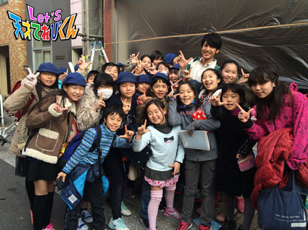
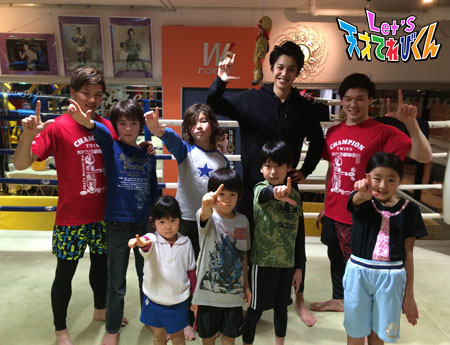

<<2015年1月 | トップページ | 2015年3月>>
2015年2月
○○でテンション上がる〜♪［飯島緋梨］
こんにちは！
飯島緋梨です。
すご～く寒いですね。
だけど緋梨は大丈夫。
ネコのにゃうを抱っこしてるとあったまる♪
冬になると毛がフサフサなの*\(^o^)/*
それでは！今回のお題！！
「○○でテンション上がる～♪」
まず最初は、
緋梨だけじゃないと思うけど
★☆雪☆★
私の住んでいるところにも
今年初めて雪が少し積もりました。
学校でもみんなで雪合戦をしたり、
ミニミニ雪だるまを作ったり！！
でも帰りは、びしょぬれで
さぁむ～い。・°°・(＞_＜)・°°・。
それにお気に入りだった手袋も…
ドロドロ(>_<)
でもでも雪が降ると毎年テンションが上がって、
ついびしょぬれになってでも遊んじゃう☆
学校も楽しいけど、
てれび戦士のみんなで遊ぶときも楽しくって
超テンション上がります！
茉日ちゃんがよく緋梨の髪の毛を編み込みしてくれます♪
自分ではできない、かわいい髪型なので
テンションが超上がります*\(^o^)/*
みなさんも
テンションあげー！
で、毎日楽しく過ごしてくださいね！
それでは、Let's テンションあげ☆
投稿者:飯島緋梨 | 投稿時間:18時45分 | カテゴリ：てれび戦士 | 固定リンク
○○でテンション上がる〜♪［林武尊］
こんにちは！ 林武尊です。
まだまだ寒い日が続きますねー。
みんな、かぜには気をつけてくださいね～！
この前、学校で得意技フェスティバルがありました。
ぼくは、けん玉の合わせ技で
ムーンサルト、もしかめスパイク、アラウンドジャパン、世界一周をやりました。
でも最後の世界一周で剣に玉が入らず、失敗に終わりました(>_<)
今回は失敗しましたが、次の得意技フェスティバルでは、
もっとすごい技をひろうして、成功して終わりたいと思います(￣^￣)ゞ
さて、本題。
ぼくが1番テンションが上がるときは、
てれび戦士のみんなとお仕事以外で一緒に遊んだり、ごはんを食べに行くときです。
理由は、たんじゅんだけど……
楽しいから！
ごはんを食べに行くと、みんなといっぱいしゃべれて、
素が出てみんなのいろーんなことがわかる。
遊ぶときは、いろんなことがおこって、
たくさん笑えるからです。

今回は、ワキワキチームの月香とパンケーキ♪
だから、もっとみんなでいい思い出を作って、もっともっと仲良くなりたいでーす！
投稿者:林武尊 | 投稿時間:18時54分 | カテゴリ：てれび戦士 | 固定リンク
○○でテンション上がる〜♪［赤崎月香］
こんにちは ヽ(^▽^@)ノ
赤崎月香です。
カスタネットって、
簡単な楽器だと思っていたけど、
なかなか難しいんだよー (・0・。)
楽しかったな～♪
☆。・:*:・°★,。・:*:・°☆
今日は、『 ◯◯でテンション上がる～♪ 』 です☆
ズバリ！！！！！
飛行機でしょ！！！(ノ´▽｀)ノ
人が 「 空を飛ぶ 」 という永遠の夢を
不可能から可能にした乗りものです！
ステキ！！！！！o(*ﾟ▽ﾟ*)o
飛行機の本を読んでもテンション上がる～♪
この前、本屋さんで飛行機の写真集を見たときは、
テンション上がりました～
高くて買えなかったけど･･･( ┰_┰)
☆。・:*:・°★,。・:*:・°☆
ん？いつも飛行機じゃつまらない？(u_u)
じゃあ、えーっと…
おいそうなスイーツや焼肉でも
テンション上がるけど…(￣▽￣)うへへへぇ～
あっ！！！！！
ありました！！！！！
『 新しい文房具でテンション上がる～♪ 』
お年玉で文房具の福袋を買いました～
筆箱やシャーペン、ノート
針なしホッチキス、テープ、のり、などなど…
どれも、ずーーーーと欲しかったやつ！！
新しい文房具だと、勉強したくなります(￣‥￣)=3
↑本当だぞ！！
嬉し～♪───Ｏ（≧∇≦）Ｏ────♪
テンション上がる～
☆。・:*:・°★,。・:*:・°☆
でも、やっぱり………
飛行機が好き(Ψ▽Ψ*)
またね～ヾ(*'-'*)
投稿者:赤崎月香 | 投稿時間:18時45分 | カテゴリ：てれび戦士 | 固定リンク
○○でテンション上がる〜♪［小西憧弥］
こんにちは！憧弥です(^-^)/
アマチュア無線技士の試験に合格しました！
やったー＼(^o^)／
初めての免許証！
うれしい！
富士山がキラキラしてて、かっこいいの！
もうテンション上がりまくりー（≧∇≦）
今回のお題は、「○○でテンション上がる～♪」
なんだけど、
今はこの免許証を見るとテンション上がります。
早くスキーに行って、雪山で無線機使いたいな(^^)
この前、学校から帰ってきて家の玄関のドアを開けたら、い～においがしたの！
すぐ 「 大学いもだ！」 ってわかって、テンション上がりました。
おいしくてお姉ちゃんと取り合いになったから、また作ってくれるって（≧∇≦）
好きなものが食べれる！ってわかったら、憧弥はテンションがあがります(^^)
投稿者:小西憧弥 | 投稿時間:18時45分 | カテゴリ：てれび戦士 | 固定リンク
○○でテンション上がる〜♪［杉本瑛］
みなさま、ごきげんよう！杉本瑛です！
さぁ、今回のお題は、
「○○でテンション上がる～♪」です！
私が1番テンション上がるのは・・・ステーキを食べているときです☆彡
お肉を口に入れたとたん、おいしーい！
って、テンションがすぐにMAXになるんですけど、
私、結構ワガママで、脂っこくなくて柔らかいお肉が好きなんです。
お仕事に行くときには、いつもママ特製のステーキ弁当を持っていきます！
これで元気モリモリ！
もう1つ、私流のテンションを上げていく方法は、
ハマってる歌を小声でもいいから歌う！です。
すると、どんどんテンションが上がってくるんです！
みんなで一緒にテンションをMAXにして、
ハッピーでいっぱいな楽しい世界にしていきましょう♪
☆*:.｡. o(≧▽≦)o .｡.:*☆
投稿者:杉本瑛 | 投稿時間:18時45分 | カテゴリ：てれび戦士 | 固定リンク
○○でテンション上がる〜♪［辻村晃佑］
どうも辻村です！
中学の中では身長が低いほうですけど、
これでも入学したときから、約10cmものびているんです！
このままいけば、高校卒業のときは約190cmです。
まぁ、あくまでこのままいけばの話ですけどね(´・ω・｀)
「 1歳半と比べると、こんなに大きくなりました 」

本題でーす！
誰でも特別うれしいことが起こると、うれしいしテンションが上がると思うんですよ！
ぼくは、日常の中でおいしい物を食べるとテンションが上がりますヽ(・∀・)ノ
だから自分でも、おいしいものをつくれたらいいな～と思います！
あとぼくは、やっぱりぬいぐるみとたわむれるとテンションがあがりますね！！
モフモフのふかふかで、テンションが上がります。
ぼくのおすすめの部分は、お腹です(*´ω｀*)
ぬいぐるみの中で、お腹は特にモフモフのふかふかです！！
みなさんも家にぬいぐるみがあったら、ためしてみてください！
テンションがあがりますよ～ヽ(´▽｀)/
投稿者:辻村晃佑 | 投稿時間:18時45分 | カテゴリ：てれび戦士 | 固定リンク
○○でテンション上がる〜♪［齋藤茉日］
こんにちは～
茉日です♪
前回のブログのテーマは、
「 これってキセキ？」 でした。
そのときは、なかなかキセキが思いつかなくて、
愛犬2匹のキセキを紹介したのですが、
載せてから 『 こっちを書きたかった！！』 と思うような、
ちょっとしたキセキが起きんです(￣^￣)ゞ
なんとなんと！卵の黄身をお箸でもてたんです^ ^
この卵は、毎朝私が 「 目玉焼きを食べている 」 と聞いた
おばあちゃんがおいしい卵を段ボールで買ってくれましたーーー！！！
新鮮だったのかな？
黄身をもてちゃった！！！
慌てて写真撮りましたよ*\(^o^)/*
この卵、おいしい！！
さてさて。本題に入りましょう^ ^
今回のテーマは、「○○でテンション上がる～♪」です( ´ ▽ ` )ﾉ
私がテンションが上がるものは、好きな食べ物を食べているとき♪です！
私が今1番はまっている食べ物は、
【 茶碗蒸し 】 です！
私がオススメの茶碗蒸しは、
価格が安いとおなじみのスーパーの茶碗蒸しです！
味は、3種類！
全部おいしいけど、私は松茸味が1番好きです！！
とってもおいしいです( ´ ▽ ` )ﾉ
テンションUP！
これで、明日からもがんばりましょーう^ ^
それでは、このへんで～
またね♪
投稿者:齋藤茉日 | 投稿時間:18時54分 | カテゴリ：てれび戦士 | 固定リンク
○○でテンション上がる〜♪［瀧澤翼］
こん にちは！
みなさん、発表します。
……実は僕、名古屋生まれなんです。
お父さんの会社の関係で1歳まで名古屋にいました。
僕が生まれた名古屋がどんなところか旅行に行ったことがあります。
名古屋城にも行って、見学しました。
お城からの景色を眺めようと思ったら…
見てください！
このしゃちほこ！
大きいですねー！！
そうそう、今回のテーマは 「 ○○でテンションが上がる～♪ 」 ですね。
僕はやっぱりダンスのレッスンをしているときにテンションが上がります！！
音楽のリズムにのって、おもいっきり踊ったり、
ダンス仲間と楽しさが共有できて、めっちゃ楽しいです！！
特にLOCK DANCEは、踊っているとテンションMAXになります！！
夢中で踊るといやなことも忘れてしまい、すごく気持ちがいいです！
ダンスのレッスンでバイブス？
…じゃなくて、テンションが上がります！！
Let's Dance！！
投稿者:瀧澤翼 | 投稿時間:18時45分 | カテゴリ：てれび戦士 | 固定リンク
○○でテンション上がる〜♪［原田明莉］
★Hello★
だぁ原田です！
茉日ちゃんの帽子を借りて、写真撮って遊んでましたヾ(＠⌒ー⌒＠)ノ
いひひ\(//∇//)\

なんでか、わかんないけど
この写真、結構気にいってます！笑
ってことで、本題に入りますね！
今回のお題は、
『 ○○でテンション上がる～♪ 』 です！！！
いっぱい、ありますな～
てれび戦士と会うだけでテンション上がっちゃうし、
夜ご飯が好物だとテンション上がるしーーー！
テンション上がることいっぱい！
でも、特にテンションが
上がることは……2つ！！！
毎月とってる空手の雑誌を読むことです！！！！！！！！！！
月に1回、送られてくるんだけど、新しいのを読むとき！
テンション上がる～♪───Ｏ（≧∇≦）Ｏ────♪
これ、1か月に1回だけの、いっちばんの楽しみなんです！！！
あ～、読みたくなってきた！
それと漢字練習帳や計算スキル、教科書をとじる瞬間です！！！
私、いつも宿題が終わったら
自分にご褒美をあげてるんです！
だから、閉じたときの明莉の心の中は…
「 よっしゃー！好きなことできる！」
って思うんです！
テンション上がると、
毎日がメッチャ楽しい！！！
ぜひ、みなさんも！！！
投稿者:原田明莉 | 投稿時間:18時45分 | カテゴリ：てれび戦士 | 固定リンク
○○でテンション上がる〜♪［小澤竜心］
こんにちは！竜心です。
この前、おいしいお肉を食べました。
みんなで 『 おいしいねー！』 って、
盛り上がって食べて、
テンションが上がりましたー(≧▽≦)
でも、ぼくが 『 テンション上がる♪ 』 のは、
ほかにもいろいろあるんです。
☆まず1つ目、【 お笑いをみているとき 】 です。
お笑いをみてると心が踊って楽しくなり、笑いの神様がぼくを明るくしてくれます♪ヽ(´▽｀)/
そして、友達と一緒にまねをして遊んでます！
☆2つ目は、【 学校の給食 】 です！
おいしくて、いつも残さず食べます。
食べ終わると残った時間は、友達を笑わせて遊んでしまいます。
そして、先生に注意されます…(´▽｀；)ゞ
給食の時間は楽しくて、幸せな時間です♪
☆それでは、最後3つ目は……、
やっぱり、【 ひとり歌舞伎 】 です！！！
これをやると、すっごくテンション上がる～♪
自分で作った歌舞伎をお父さん、お母さんにみてもらって、拍手がくると気分そう快！
うれしいんですーＯ(≧∇≦)Ｏ
これからも、がんばります。
それでは～、Let's！
投稿者:小澤竜心 | 投稿時間:18時45分 | カテゴリ：てれび戦士 | 固定リンク
○○でテンション上がる〜♪［桐畑カレン］
こんにちは。
カレンです(*^^*)
寒～い朝、モフモフのおふとんから、
なかなか出ることができない私だけど、
「 今日は、パンだよ～ 」
と起こされると、パッと起きられます。
そう！
朝ご飯がパンでテンション上がる～♪
特にかためのパンで、くるみなどが入っていると、いうことなしです！
それにあたたかいスープで体ポカポカ。
おいしいなあ(^q^)
続きまして、
絶叫マシーンでテンション上がる～♪
私は絶叫マシーンが大好きです。
自分で運転をしてスピードを出すものは、
「 こわい(;o;) 」
と思ってしまうけど、ジェットコースターなどは大好き(^^)
スピードとか、
落ちる感じとか、
クルクル回る感じとか、
たまりません(>.<)
乗っているときは、本当に楽しい！！
あと5周くらいしてくれたらいいのに…と思ってます。
でも1番テンションが上がっているのは、
順番を待って、いよいよ乗れるっていうときなんです(*^^*)
身長が足りなくて（背伸びをしてみたけど、スタッフのお姉さんにしっかりバレました）
乗れないこともあったから、やっぱり身長をのばしたいな☆
今日は…
ときには、まじめな私たち(*^^*)
の1枚です♪
投稿者:桐畑カレン | 投稿時間:18時45分 | カテゴリ：てれび戦士 | 固定リンク
これってキセキ！？［小西憧弥］
こんにちは！憧弥です。
年賀状、ありがとうございました！
かわいい絵とか、うれしかったです(^-^)/
今年もがんばります！！
1月10日に初もうでに行ってきました！
神社で焼き鳥を食べました(^_^)v
憧弥は大好きなカワ、お姉ちゃんはモモ、お父さんはネギマ、おいしかったよー。
目標達成のお守りも買いました。
今回のお題は、「 これってキセキ！？」 です！
やっぱり、てれび戦士になれたことです！
それと、てれび戦士のみんなに会えたこと！！
てれび戦士になれてなかったら、みんなと会うことなかったんだって思うと、
これってほんとに、すっごいキセキです(^o^)/
あともう1つ、茉日の友達が憧弥の友達だったってこと！
こんなに広い日本なのに、共通の友達がいたってビックリ（≧∇≦）
すごいでしょー！キセキでしょー！
投稿者:小西憧弥 | 投稿時間:18時54分 | カテゴリ：てれび戦士 | 固定リンク
これってキセキ！？［杉本瑛］
みなさま、ごきげんよう！杉本瑛です。
先日、お家で2分の1成人式をしたんです。
ちょっときつかったけど、かわいかったし、楽しかったです！
さてさて、「これってキセキ！？」
それは、、、人との出会いです。
まず、浜村淳さん！
私は幼稚園のときから、浜村さんの大大大ファンでした。
私が趣味でしていた浜村さんの番組のモノマネを
事務所の先輩が面白がってくれて、
ラジオの番組にゲスト出演させていただきました。
それだけでも、喜びの舞を踊るほど嬉しかったのに、
浜村さんのマネージャーさんが楽屋に連れて行ってくださって、
本物の浜村さんにお会いすることができました。
そのときは、天国に行きそうなぐらい嬉しかったです！
お手紙を差し上げたら、浜村さんがお返事をくださったのが始まりで、
お手紙のやりとりをするようになりました。
そして、1月10日が浜村さんのお誕生日で80歳になられました☆
得意の入浴剤をプレゼントしたら、お届け通知が来る前に
浜村さんからお返しのプレゼントが届いたので、ビックリ！
すっごく嬉しかったです！
これも奇跡かな？
そして、てれび戦士のみんな！
誰と一緒でもワイワイ遊べるぐらい仲良しなんです☆彡
お誕生日はおたがいサプライズプレゼントしたり、
どちゃもん探しのお土産を交換したり、
休憩時間にかくれんぼしたり、
カレンちゃんとは忍者ごっこしたりします！
年齢も住んでいる場所もバラバラなのに、みんないいお友達なんです！
この12人が集まって、しかも浜村さんとご一緒して
Let’s 天才てれびくん！という番組にでることができるなんて、
本当に本当に本当に本当に奇跡だと思います☆*:.｡. o(≧▽≦)o .｡.:*☆
投稿者:杉本瑛 | 投稿時間:18時45分 | カテゴリ：てれび戦士 | 固定リンク
これってキセキ！？［辻村晃佑］
どうも、辻村晃佑です。
はぁ・・・もう約2ヶ月で、新学年ですよ(；´Д｀)
時が流れるのは、すごく早いですね！
今年の目標は、「 いろいろな料理を作る 」 なので、
1つ目の料理はナポリタンを作りたいなー！
もうここに書いたからには、絶対やりますよ。
本当ですよ！
今回のお題は、『 これってキセキ！？』
小学校のころ、給食のときにあまったリンゴがもらえるじゃんけんで、
じゃんけんがしたくて参加したんですけど、リンゴはいらないのに勝っちゃました(´・ω・｀)
（いらないですと言って返しました）
そんなに欲しくないものだと、よく当たっちゃうんですよ！
これも 「 キセキ 」 っていうのかなぁ？
でもすごい欲しいもののじゃんけんや、くじとかでは、たいていハズレるんですけどね。
これって、どうゆうこと？！ヽ(`Д´)ﾉ
そういえば、ぼくがてれび戦士になれたことも、ぼくにとってはすごいキセキなんです！
てれび戦士になれたおかげで、たくさんの人と出会えて、本当によかったなぁ(*´ω｀*)
投稿者:辻村晃佑 | 投稿時間:18時45分 | カテゴリ：てれび戦士 | 固定リンク
これってキセキ！？［原田明莉］
★Hello★
だぁ原田です！！！
こないだ、月香ちゃん（つっきー）がある服を着ていました！
その服とは…、明莉と色違いの服だったんです！！！
なので、次に会うときは、おそろいにしようよ！
という話になったので、2人でおそろいにしてみました！(*^◯^*)
おそろいのジャケットとか着て遊んで、
気分ウキウキで、
ちょーーー楽しかったです！！
さてさて、今回のお題に入りたいと思います！
今回のお題は…
「 これってキセキ！？」
です！！！
もー、これしかない！！！
まず、てれび戦士になれたことです！
そして、今のてれび戦士と会うことができたことです！！！！！
これも何かの縁で会えたことだと思います！
そしてそして、その中でも………
同じ年齢で同じ名前の子がいたことです！！！
てれび戦士に会えたことも奇跡なのに、
その中でも特に飯島緋梨ちゃんに会えたことは、すごいことだと思います！
本当に本当に本当に
奇跡ではないかと思います！！！
こないだ
【 Wあかり 】 を
写真に撮って遊びました！
こんな変顔して撮ってたら、
緋梨ちゃんがもっとすんごい変顔をしだして、
爆笑でした！www
みんなも知ってるかもしれないのですが、
とっても明るくて面白い陽気な子なので、
2人でいるとメチャクチャにぎやかになります！
今回は、てれび戦士の紹介がいっぱいできましたね！(^O^)／
改めて、てれび戦士になれたこと、みんなに会えたことは本当に奇跡で、
さらに同じ年齢で同じ名前の飯島緋梨ちゃんに会えたことは、もっと奇跡だと思いました！
この奇跡を、これからも大切して過ごしていきたいです！
★Let's value time★（時間を大切にしよう！）
投稿者:原田明莉 | 投稿時間:18時45分 | カテゴリ：てれび戦士 | 固定リンク
21世紀調査報告書［大野拓朗課長］
やあ！茶の間戦士のみんな！元気にしているか？
インフルエンザが流行っているが、
勇敢な茶の間戦士である諸君は、ウイルスなんかに負けたりしないだろうな！
「 この前、課長は風邪をひいていたじゃないか！」 なんてツッコミは、ナシだ。
実はこのあいだ、東京の東の方で、あるドラマのロケに参加した。
もちろん、世を忍ぶ仮の姿である俳優の大野拓朗としてだ！
そのとき、江東区立八名川小学校の茶の間戦士たちが、私の応援に駆けつけてくれたのだ！！

私は嬉しくて嬉しくて、思わず泣き出しそうになり、
でもそれに耐えつて、みんなと熱く抱き合い、肩を組んで歌を歌い、
第5やたがらす丸に一緒に連れて帰りたかったのだが、
そういうわけにもいかないから我慢した……(泣)
いつかは、みんなの町にもひょっこり現れるかもしれないぞ！
そのときは、温かく迎えてくれ！
この間は私が身体を鍛えるために通っているキックボクシングのジムでも、
茶の間戦士たちと会ったんだ！！

みんな、本当にいつも応援ありがとな！！
異次元獣との戦いはまだまだ続くが、これからも力を貸してくれ！
合言葉はいつも、「 Let's！」 だ！
Let's！！！！！
投稿者:大野拓朗課長 | 投稿時間:18時45分 | カテゴリ：未来人 | 固定リンク
これってキセキ！？［笹原尚季］
僕は、年末に映画を観に行きました。
公開初日に観たいと思ってたら、
ちょうどその日、予定が空いたのでギリギリで券を買ってみたら・・・。
なんと！！
1番見やすい真ん中の席で観れたのです♪
僕は結構運が良くて、
ガチャガチャで欲しいものがあって1回だけ回してみると、
その欲しいものが当たったり。
だから、1番いい席が取れたんだと思います。
【 これってキセキ！？】 じゃありませんか？？
あとロケのときに、お母さんに撮ってもらった写真を見てみたら、何か頭にはえてる！

お母さんの撮る写真は、こんなのばかり。
これもキセキ？？
投稿者:笹原尚季 | 投稿時間:18時45分 | カテゴリ：てれび戦士 | 固定リンク
これってキセキ！？［齋藤茉日］
こんにちは～
まひるです^ ^
今回のテーマは、
《 これってキセキ！？》 です^ ^
このお題、難しいですねー>_<
とっても悩みました。
とっても探しました。
…あ！発見(OvO)
これはキセキ！
まず、写真をみてください^ ^
一目瞭然、これってキセキ ( ´ ▽ ` )ﾉ
(OvO) し、白、白目？？
生きてますよ^ ^ 笑
かわいいですよね？？(･_･; 笑
これは、私の家で飼っている 「 マロン 」 です！
では、次！
ありゃー(o^^o)
かわいい！
2匹とも、こっち向いてる？！
プリンとマロンは、我が家の自慢(o^^o)
これってキセキですよね？
それでは、このへんで*\(^o^)/*
またね！
投稿者:齋藤茉日 | 投稿時間:18時54分 | カテゴリ：てれび戦士 | 固定リンク
これってキセキ！？［小澤竜心］
こんにちは！竜心です。
すごく寒くなりましたね！
みなさん、体に気をつけてくださいねー。
寒さなんかに、負けないぞ～o(*⌒―⌒*)o
みなさんは、『 これってキセキ！？』 って思うことはありますか？
ぼくは、2つあります。
1つ目は、【 ぼくが生まれてきたこと 】です。
ぼくがいるってことは…、
お父さんとお母さんがいて…、
おじいちゃんとおばあちゃんがいる…。
これって、キセキ続き～(゜ロ゜)
キセキがどんどんつながって、
ぼくがいるんだなーって思います。
2つ目は、【 いろんな人との出会い 】です。
もし住んでる町が違ってたら、
学校も友達も違ってたかも…。
今のぼくとも違ってて、
てれび戦士じゃなかったかもしれない。
こんなにいっぱい人がいる中で、
友達や先生たちに出会えたのは、すごいキセキだと思います。
キセキって、ぼくの知らない間に起こっているんだろうなー。
これからも、たくさんのキセキに出会えますように♪
それでは、サッカーもがんばります！
またねー(⌒0⌒)／~~
投稿者:小澤竜心 | 投稿時間:18時45分 | カテゴリ：てれび戦士 | 固定リンク
これってキセキ！？［赤崎月香］
こんにちは ヽ(^▽^@)ノ
赤崎月香です。
インフルエンザが流行っていますね(≧д≦)
なので、学校ではマスク着用です！！
寒い日は、家での～んびり
ゴロゴロ～♪ゴロゴロ～♪していたい(*'▽'*)
☆。・:*:・°★,。・:*:・°☆
今回は、『 これってキセキ！？』 です。
さっきも書いたけど、
ゴロゴロ～っとしたり・・・
ぼーーーーーっとしたり・・・
飛行機をひたすら眺めたり・・・
時間をむだに過ごしていることがよくあります(^^;)
お母さんから、
「1日中ぐーたらしてるけど、この日を生きたい！
と、思ってる人はたくさんいるんだよ！
もったいない！」
と、言われたことがあります。
最初は、意味がわからなくて
「 はいはい 」 と、聞き流していました。
でも！でも！(☆Д☆)
よく考えてみると、
わたしがむだに過ごした日・・・
それは、世界中のどこかで
病気やけがと闘っている人がいるということ。
その人にとっては、生きたい1日だったかもしれない。
頑張って生きた1日かもしれない。
私は、もっと何かができたかもしれない。
はっ！と、しました。
このことに気づいてから、
1日を大切に生きようと思いました。
このことに気づけて良かった！＼(*T▽T*)／
怒られる日もあるし、
失敗してへこんじゃう日もあるけど、
健康で幸せに生きてるってことは、
本当は、とってもキセキなんじゃないかと思います。
普通の毎日だって、
キセキの積み重ねなんだね♪Ｏ(≧▽≦)Ｏ
☆。・:*:・°★,。・:*:・°☆
でもやっぱり、
みんなでだらだらおしゃべりするのも
楽しい～♪ やっほーい♪
またね～ヾ(*'-'*)
投稿者:赤崎月香 | 投稿時間:18時45分 | カテゴリ：てれび戦士 | 固定リンク
これってキセキ！？［瀧澤翼］
こんにちは！
最近スケボーを始めた瀧澤翼です。
初めてスケボーに乗ったとき、
おもいっきり転んで、左の太ももにアザが2つもできちゃいました（笑）
今回のテーマは、「 これってキセキ！？」 です。
今年2015年は、未年（ひつじどし）です！
実は僕、年男なんです！！
そして、なんとお父さん！
さらに、おじいちゃんまでも年男！！
まさかの3世代・年男なんです！
これって、すっごい奇跡じゃないですか？
そして最大の奇跡は、
僕がてれび戦士になって
茶の間戦士やみなさんと会えたことです！
僕は人との出会いがある意味 “奇跡” だと思っているので、
これからもいろいろな人と出会って、成長していけたらなぁって思います！
これから、いくつの奇跡と出会えるのかな。
楽しみだな～！
Let's 奇跡！！
投稿者:瀧澤翼 | 投稿時間:18時45分 | カテゴリ：てれび戦士 | 固定リンク
ページの一番上へ▲